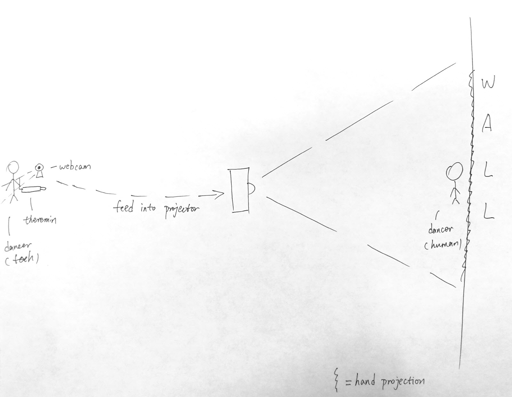

Frontier of Concession
Time
May 2019
Tools
Projector, Max/MSP, Webcam
Role
Developer, Choreographer, Dancer
Brief
Frontier of Concession is an immersive and interactive dance piece about the struggle we have along the process of cyborgification in human society — how we first manipulate technology, then get manipulated by it, and eventually lose our intellectual territory.
It is also an experiment to break the analog-digital wall seen in many tech performances, which heavily relies on a 2 dimensional screen space.
This is a project co-created by me & Yiru Chen.
Concept - A Battle of Intellectual Territory
Identity-wise, I am a creative technologist who utilizes technology, especially in computer science, as tools and means for artistic expression. However, I’m also a percussionist who specializes in traditional West African music — a music form that originates from the 13th century and requires as simple as a pair of human hands and a wooden drum. As someone who is witnessing how intelligent machines gradually outperforms human in a growing number of art domains, including percussion music, I feel that our faith in human’s intellectual capability is challenged at an unprecedented level. In this case, it could mean that we can no longer claim “intelligence” as our exclusive territory.
At another level, technology itself has boundaries, as it is closely connected to the social, cultural, and economical power of the country(-ies) that owns it. The process that we learn and adapt to emerging technology is, at the same, our adaptation to the culture behind it. In cases where we are forced to rely on a monopolizing technology from a tech-worshipping culture (due to societal or economic reasons), we somewhat ceded and denied the humanistic part of our territory.
To convey this sense of loss of territory incurred by technology advancement, this piece incorporates two categories of technology — computer vision and sound synthesis — to recreate the battle between human and machines.
Two dancers will participate: one plays the role of human, the other the role of technology. The tech dancer will use her/his hands to generate synthesized sounds, and at the same time, the hands of the tech dancer will be motion-tracked and projected onto a vertical surface, which functions as the backdrop of stage for the human dancer. The two dancers interact at both sound level and visual level.
Prototype
The piece was situated in a rectangular, dark room, with two performers taking up two opposite sides of it. A laptop with a webcam was set up right next to the tech dancer (located on the left), tracks her/his hand movements, and fed the movement images to the projector. The enlarged hand movement images were then projected fullsize onto a wall at the other end of the room, where the human dancer is. The audience was guided to sit in the middle of the room, facing the wall and the human dancer.
An important part of this piece is to create a dialouge between tech and human through the juxtaposition of projections and a dancing body. Thus, a Max patch was created to capture and analyze the movement of a dancer's hand and transformed it into projection images that resembles the tone and feeling of technology. Midi sounds were also generated based on the hand movements.

Scoring-wise, this piece explored answers to the following quesitons:
- In traditional choreographic pieces, dancers either interact with each other or an architecture / site in their actual physical size. Given the power of technology, now it is possible to decrease/increase the size of a body part/architectural part. What possible choreographic interventions can be done?
- What are the advantages and limitations of adopting real-time, interactive body part projections in a piece of dance?
As a result, six scores were created to identify the effects of different combination of scales between the projection and the human body, and what interaction / dynamics worked best under each of them.